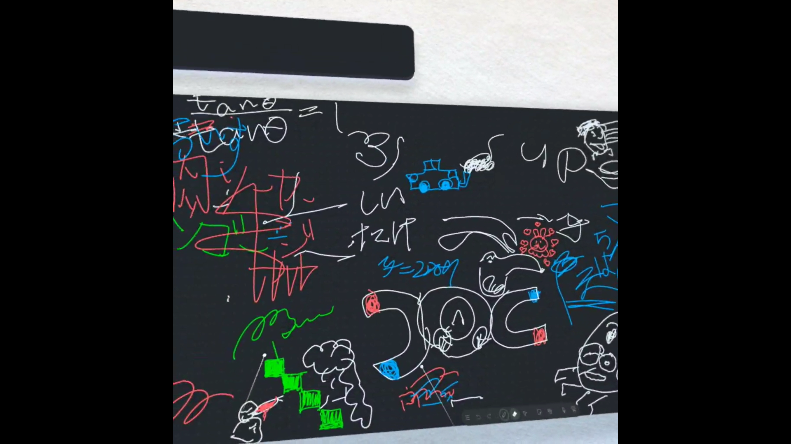

2-3 VR（バーチャルリアリティー：Virtual Reality）会議室の体験

1.内容
VRゴーグルをつけて仮想空間の体験をした。会議室に入って机のボードに絵を描いたり、大きいボードに他の学生と一緒に絵を描いたりした。
また、実際は遠くにいても仮想空間内のアバターが近くにいたらその人の声が聞こえて話すこともできた。
2.感想
初めてVR体験をして、今までVRは3Dに見えるだけのものと思っていたけれど、本当にそこにいるような感覚ですごいと思った。向いている向きをかえると画面も自然に滑らかに動いてすごかった。
机の上のボードに絵を描いたときは、音や描く感覚が本当に絵を描いている時とほとんど同じだった。